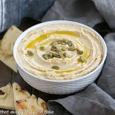

Best Hummus Ever

What makes this the best ever?
This is the best recipe I've found for making creamy, restaurant-style hummus. It's quick to make and stores well in both th fridge and freezer.
You will need a food processor for the creamiest hummus, but a blender will still give you a nice smooth hummus.
Ingredients
- 1.5 cans of chickpeas (skins removed)
- 150 mL aqua faba (from the cans of chickpeas)
- The juice from 1.5 lemons
- 1/2 tsp sea salt
- 8 TBSP tahini
Steps
- Place all ingredients into food processor
- Process for 2-3 minutes (untill smooth)
- Taste and adjust seasonings to liking
- Just before serving, add small amount of olive oil and paprika to hummus
Once prepared, the hummmus can store in the fridge for about a week. Can also place in freezer for up to 3 months